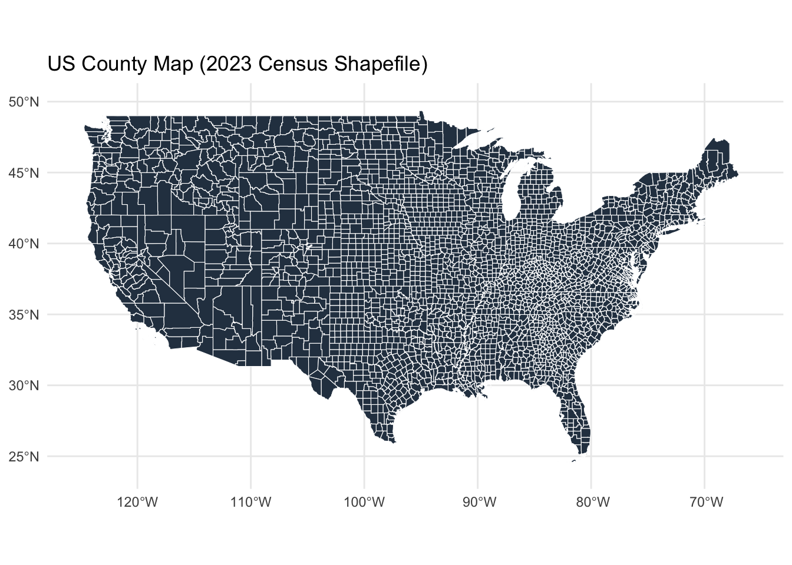
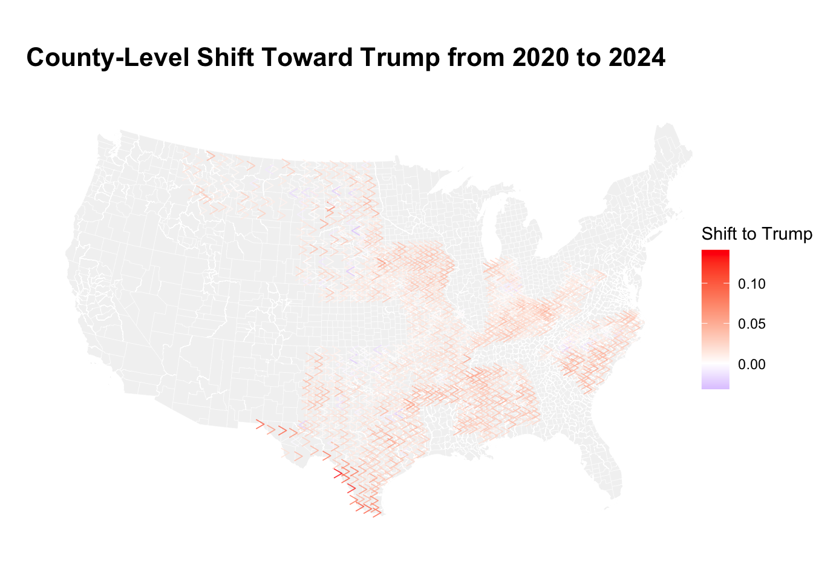

Exploring Recent US Political Shifts
This research project analyzes voting behavior changes between 2020 and 2024 U.S. presidential elections through data analysis at the county level. Our analysis uses web-scraped election data together with official U.S. Census shapefiles to determine areas where Donald Trump gained or lost support from 2020. Our research aims to reveal important geographic patterns and partisan shifts which exist beyond the general national election outcomes. It combines geospatial mapping with R data cleaning and exploratory analysis to identify strategic areas for both parties while providing a framework that can be applied to future election cycles.
County-level boundaries from the 2023 U.S. Census shapefile, shown as a base for mapping political shifts.
2020 County-Level Results
The following table shows the 2020 presidential election results by county for New York, as scraped directly from Wikipedia. This provides a reference point for analyzing shifts in voting behavior between 2020 and 2024.
| county | joe_biden_democratic | joe_biden_democratic_2 | donald_trump_republican | donald_trump_republican_2 | various_candidates_other_parties | various_candidates_other_parties_2 | margin | margin_2 | total_votes_cast | state |
|---|---|---|---|---|---|---|---|---|---|---|
| County | # | % | # | % | # | % | # | % | Total votes cast | New York |
| Albany | 99,474 | 64.55% | 51,081 | 33.15% | 3,546 | 2.30% | 48,393 | 31.40% | 154,101 | New York |
| Allegany | 6,048 | 29.10% | 14,135 | 68.02% | 599 | 2.88% | -8,087 | -38.92% | 20,782 | New York |
| Bronx | 355,374 | 83.29% | 67,740 | 15.88% | 3,579 | 0.83% | 287,634 | 67.41% | 426,693 | New York |
| Broome | 47,002 | 50.53% | 43,791 | 47.08% | 2,223 | 2.39% | 3,211 | 3.45% | 93,016 | New York |
| Cattaraugus | 11,879 | 34.17% | 22,155 | 63.74% | 726 | 2.09% | -10,276 | -29.57% | 34,760 | New York |
1. Which county cast the most votes for Trump (absolute) in 2024?
Our analysis begins by determining which county delivered the most votes to Donald Trump in 2024.
The highest number of votes Trump received occurred in Renville, North Dakota and Lyman, South Dakota with 993 votes. The voting patterns in this election followed traditional Republican voting behavior in major populous counties throughout North Dakota.
2. Which county cast the highest fraction of votes for Biden in 2020?
This question reveals which areas delivered the most significant proportion of votes to Biden during the 2020 election.
The county that gave Biden the most support in 2020 was Oglala Lakota, South Dakota where he received 88.41% of the total votes.
3. Which county had the largest shift toward Trump (absolute votes) in 2024?
This analysis focuses on the county which experienced the largest absolute growth in Trump votes from 2020.
The largest net vote gain for Trump happened in Los Angeles, California where he received 44332 more votes. The voting pattern indicates either an expanding conservative voter base or diminished opposition voter turnout in that specific region.
4. Which state had the largest shift toward Harris (or smallest shift to Trump) in 2024?
This analysis shows where Democratic candidate Kamala Harris maintained support while Trump’s gains were minimal.
The state with the smallest shift toward Trump was Florida, where Harris retained or grew 5668731 votes relative to 2020.
5. What is the largest county by area?
The relationship between geographical size and population does not always exist but it provides useful context for understanding how visualizations can misrepresent voter trends by land.
The dataset shows that Yukon-Koyukuk, Alaksa covers the biggest area at 380461.938 square miles. The county’s extensive size does not necessarily translate to significant voting power because land itself does not participate in elections.
6. Which county had the highest voter density in 2020 (voters per area)?
High voter density often reflects urban environments with greater civic infrastructure. This analysis ranks counties by total 2020 votes per unit of land area.
The county with the highest voting density in 2020 was San Francisco, Californa with 3623.4 votes per square mile. These areas tend to lean Democratic and represent hubs of concentrated political activity.
7. Which county had the largest increase in voter turnout in 2024?
The shift in voter turnout serves as a powerful indicator of political enthusiasm. This analysis focuses on determining which county experienced the most significant rise in total ballots between 2020 and 2024.
The largest voter turnout increase happened in Montgomery, Texas where total votes rose by 35715. The increase in voter turnout could stem from fresh voter engagement initiatives or local matters that motivated citizens to participate.
Our County Shift Map
The map below shows how Donald Trump received different levels of support in each county during the 2020 and 2024 presidential elections. The direction of each arrow shows the voting shift while longer redder arrows indicate counties where Trump received the greatest vote share increase. The analysis uses Wikipedia election pages that were scraped and combined with official county shapefiles from the U.S. Census Bureau. The map reveals local partisan trends through vote percentage changes rather than raw vote counts which helps identify emerging patterns that state-level results might hide.

The visualization shows that Trump gained the most votes in the South and Midwest and parts of the rural West with Texas Alabama and Tennessee showing the most significant growth. The rightward movement in some counties from traditionally blue or swing regions is not consistent across the entire country. The non-uniform pattern indicates Trump’s 2024 strategy involved strengthening his base in established strongholds instead of building new alliances which will affect future campaign strategies and party platforms.